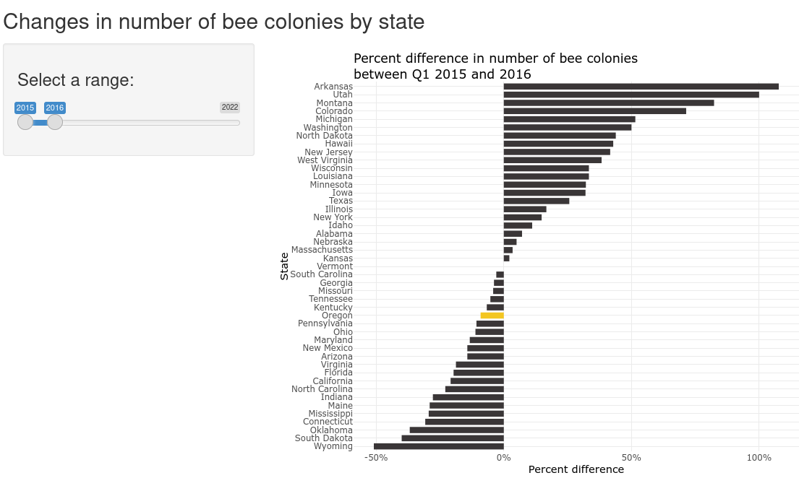

Carter McMahon
Projects
About
Categories
All
(8)
Environmental
(3)
Transit Data
(4)
Video/Board Games
(2)
Carter’s portfolio is under construction
Bart Ridership
Transit Data
Above, you’ll find the setup code for the interactive graphic on this page. Below, you’ll see the graphic and my code for making it. This graphic uses ridership and geospatial data from…

Bee Populations
Environmental
This app uses data from the 2022 Week 2 Tidy Tuesday event. It was built in collaboration with Karyn Brehmeyer.
Environmental Impact of Foods
Environmental
This table shows the amount of emissions per kg of food produced for a variety of food products.
Flesh and Blood TCG
Video/Board Games
This is a poster I made for a Data Engineering course. The database I constructed for the project is outlined in an Entity Relationship Diagram at the bottom of the poster.
Popularity of Steam Games
Video/Board Games
This interactive table uses data from the 2021 Week 12 Tidy Tuesday event.
Portfolio Presentation in Reveal.js
Transit Data
This is a presentation with some of the contents from this portfolio. It was made using Quarto Markdown and Reveal.js
Transit Infrastracture Costs per KM
Transit Data
This app uses data from the 2021 Week 2 Tidy Tuesday event. It builds on the work of GitHub users jsakaluk and javendano58.
UK Travel Emissions
Transit Data
Environmental
This graphic was made using data from the UK Department for Business, Energy & Industrial Strategy, which I accessed through Our World in Data.
No matching items